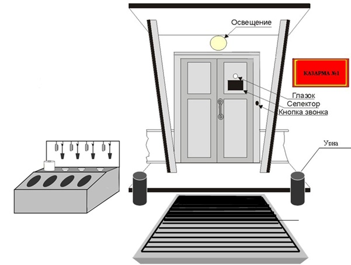

Воинские звания и знаки различия. Начальники и подчиненные, старшие и младшие.
Порядок получения и выполнения приказаний. Выполнение воинского приветствия.
Занятие 1. Обязанности лиц суточного наряда.
Занятие 2. Организация и несение службы в карауле.
Обязанности должностных лиц караула (пост, часовой, разводящий, караульный)
Зачет по знанию должностных обязанностей и основных положений общевоинских уставов ВС РФ.
Военнослужащий в служебной деятельности руководствуется Конституцией Российской Федерации, федеральными конституционными законами, федеральными законами, общевоинскими уставами и иными нормативными правовыми актами Российской Федерации.
Защита государственного суверенитета и территориальной целостности Российской Федерации, обеспечение безопасности государства, отражение вооруженного нападения, а также выполнение задач в соответствии с международными обязательствами Российской Федерации составляют существо воинского долга, который обязывает военнослужащего:
- быть верным Военной присяге (обязательству), беззаветно служить народу Российской Федерации, мужественно и умело защищать Российскую Федерацию;
- строго соблюдать Конституцию Российской Федерации и законы Российской Федерации, требования общевоинских уставов, беспрекословно выполнять приказы командиров (начальников);
- совершенствовать воинское мастерство, содержать в постоянной готовности к применению вооружение и военную технику, беречь военное имущество;
- быть дисциплинированным, бдительным, хранить государственную тайну;
- дорожить воинской честью и боевой славой Вооруженных Сил, своей воинской части, честью своего воинского звания и войсковым товариществом, с достоинством нести высокое звание защитника народа Российской Федерации;
- соблюдать общепризнанные принципы и нормы международного права и международные договоры Российской Федерации.
Военнослужащий должен быть честным, храбрым, при выполнении воинского долга проявлять разумную инициативу, защищать командиров (начальников) в бою, оберегать Боевое знамя воинской части.
Военнослужащий обязан проявлять патриотизм, способствовать укреплению мира и дружбы между народами, предотвращению национальных и религиозных конфликтов.
Военнослужащий обязан уважать честь и достоинство других военнослужащих, выручать их из опасности, помогать им словом и делом, удерживать от недостойных поступков, не допускать в отношении себя и других военнослужащих грубости и издевательства, содействовать командирам (начальникам) и старшим в поддержании порядка и дисциплины. Он должен соблюдать правила воинской вежливости, поведения, выполнения воинского приветствия, ношения военной формы одежды и знаков различия.
Обо всех случаях, которые могут повлиять на исполнение военнослужащим его обязанностей, а также о сделанных ему замечаниях он обязан докладывать своему непосредственному начальнику.
За нарушение уставных правил взаимоотношений между военнослужащими, связанное с унижением чести и достоинства, издевательством или сопряженное с насилием, а также за оскорбление одним военнослужащим другого виновные привлекаются к дисциплинарной ответственности, а при установлении в их действиях состава преступления к уголовной ответственности.
Военнослужащий обязан знать и соблюдать в повседневной деятельности требования безопасности военной службы. Он должен заботиться о сохранении своего здоровья, повседневно заниматься закаливанием, физической подготовкой и спортом, воздерживаться от вредных привычек (курения, употребления алкоголя), не допускать употребления наркотических средств и психотропных веществ.
По служебным вопросам военнослужащий должен обращаться к своему непосредственному начальнику, а при необходимости с разрешения непосредственного начальника к старшему начальнику.
По личным вопросам военнослужащий также должен обращаться к непосредственному начальнику, а в случае особой необходимости к старшему начальнику.
При обращениях (внесении предложения, подаче заявления или жалобы) военнослужащий руководствуется законодательством Российской Федерации и Дисциплинарным уставом Вооруженных Сил Российской Федерации.
Военнослужащий обязан знать и соблюдать нормы международного гуманитарного права, правила обращения с ранеными, больными, лицами, потерпевшими кораблекрушение, медицинским персоналом, духовными лицами, гражданским населением в районе боевых действий, а также с военнопленными.
Военнослужащий в ходе боевых действий, даже находясь в отрыве от своей воинской части (подразделения) и в полном окружении, должен оказывать решительное сопротивление противнику, избегая захвата в плен. В бою он обязан с честью выполнить свой воинский долг. Если военнослужащий, находясь в беспомощном состоянии, в том числе вследствие тяжелого ранения или контузии, будет захвачен противником в плен, он должен искать и использовать любую возможность для своего освобождения и освобождения своих товарищей из плена и возвращения в свою воинскую часть.
Военнослужащий, захваченный противником в плен, при допросе имеет право сообщить только свою фамилию, имя, отчество, воинское звание, дату рождения и личный номер. Он обязан сохранять честь и достоинство, не разглашать государственную тайну, проявлять стойкость и мужество, помогать другим военнослужащим, находящимся в плену, удерживать их от пособничества противнику, отвергать попытки противника использовать военнослужащего для нанесения ущерба Российской Федерации и ее Вооруженным Силам.
За военнослужащими, захваченными в плен или в качестве заложников, а также за интернированными в нейтральных странах сохраняется статус военнослужащих. Командиры (начальники) обязаны принимать меры по освобождению указанных военнослужащих в соответствии с нормами международного гуманитарного права.
Войсковые и корабельные воинские звания военнослужащих Вооруженных Сил Российской Федерации
Каждому военнослужащему присваивается соответствующее воинское звание. Воинские звания подразделяются на войсковые и корабельные.
Из ст. 6 устава Внутренней службы ВС РФ утвержденного указом Президента РФ от 10 ноября 2007 г. N 1495
1. В Вооруженных Силах Российской Федерации, других войсках, воинских формированиях и органах устанавливаются следующие составы военнослужащих и воинские звания:
ПЕРЕЧЕНЬ ВОИНСКИХ ЗВАНИЙ
ВОЕННОСЛУЖАЩИХ ВООРУЖЕННЫХ СИЛ РОССИЙСКОЙ ФЕДЕРАЦИИ
|
Состав |
Воинские звания |
|
|
войсковые |
корабельные |
|
|
Солдаты, матросы, сержанты, старшины |
Рядовой (курсант) Ефрейтор Младший сержант Сержант Старший сержант Старшина |
Матрос (курсант) Старший матрос Старшина 2 статьи Старшина 1 статьи Главный старшина Главный корабельный старшина |
|
Прапорщики и мичманы |
Прапорщик Старший прапорщик |
Мичман Старший мичман |
|
Младшие офицеры |
Младший лейтенант Лейтенант Старший лейтенант Капитан |
Младший лейтенант Лейтенант Старший лейтенант Капитан - лейтенант |
|
Старшие офицеры |
Майор Подполковник Полковник |
Капитан 3 ранга Капитан 2 ранга Капитан 1 ранга |
|
Высшие офицеры |
Генерал- майор Генерал- лейтенант Генерал - полковник Генерал армии |
Контр – адмирал Вице-адмирал Адмирал Адмирал флота |
|
Маршал Российской Федерации |
||
2. Перед воинским званием военнослужащего, проходящего военную службу в гвардейской воинской части, на гвардейском корабле, добавляется слово «гвардии».
3. К воинскому званию военнослужащего или гражданина, пребывающего в запасе, имеющего военно-учетную специальность юридического или медицинского профиля, добавляются соответственно слова «юстиции» или «медицинской службы».
(в ред. Федерального закона от 06.01.2007 N 3-ФЗ)
4. К воинскому званию гражданина, пребывающего в запасе или находящегося в отставке, добавляются соответственно слова «запаса» или «в отставке».
5. Для лиц, не являющихся военнослужащими, запрещается вводить специальные звания или классные чины, аналогичные воинским званиям.
Ст. 46 Федерального закона «О воинской обязанности и военной службе» от 28.03.1998 N 53-ФЗ
Знаки различия
73. Для военнослужащих устанавливаются военная форма одежды и знаки различия. Военная форма одежды носится строго в соответствии с правилами ношения военной формы одежды и знаков различия, определенными Министром обороны Российской Федерации.
Из проекта приказа Министра обороны Российской Федерации О Правилах ношения военной формы одежды военнослужащими Вооруженных Сил Российской Федерации:
При ношении военнослужащими полевой формы одежды в качестве повседневной, носятся все знаки различия.
При ношении военнослужащими полевой формы одежды носятся только кокарды защитного цвета, петличные знаки, звезды и нашивки на погонах.
На предметах специальной одежды знаки различия не носятся, кроме установленных отдельными приказами.
Знаки различия по воинским званиям представляют собой звезды на погоны офицеров, прапорщиков (мичманов), нашивки на погоны (погончики) сержантов и старшин.
Знаки различия по функциональному предназначению (петличные знаки) родов войск, специальных войск (служб) – на предметах форменной одежды размещаются металлические золотистого цвета; на куртках полевых камуфлированной расцветки - защитного цвета. Военнослужащие воинских частей (подразделений), не относящиеся к родам войск, специальным войскам (службам), для которых не установлены петличные знаки, носят форменную одежду с общевойсковыми петличными знаками.
Петличные знаки располагаются:
- на погонах к рубашкам;
- в углах воротников пальто зимних, кителей, курток камуфлированной расцветки.
Они размещаются:
- на погонах - на продольной осевой линии погона, на расстоянии 5 мм от края пуговицы;
- на воротниках (лацканах) - по биссектрисе, на расстоянии 35 мм от угла воротника до центра эмблемы, при этом вертикальная ось симметрии эмблемы должна быть параллельна отлету воротника (лацкана).
Знаки различия по принадлежности военнослужащих представляют собой нарукавные нашивки и металлические нагрудные знаки.
Нарукавные знаки по принадлежности к Министерству обороны, Генеральному штабу, Тылу Вооруженных Сил, видам, родам войск Вооруженных Сил и им равным военнослужащие располагают на внешней стороне правого рукава предметов форменной одежды.
Нарукавные знаки по принадлежности к военным округам (флотам), специальным войскам (службам), конкретным воинским формированиям располагаются на внешней стороне левого рукава предметов форменной одежды, но не более одного знака.
Военнослужащие воинских частей, не имеющие знаков различия по принадлежности к конкретным воинским формированиям, носят знаки различия в виде нарукавного знака по принадлежности к военным округам (флотам) или знак различия по принадлежности к Вооруженным Силам.
Нарукавные знаки размещаются: на пальто зимних, кителях, тужурках (кроме летних), куртках шерстяных и фланелевках (форменках) – на расстоянии 80 мм от верхней точки рукава до верхней точки знака, на куртках полевых камуфлированной расцветки (при ношении в качестве повседневной формы одежды) – на нарукавном кармане, на 10 мм ниже клапана кармана.
Знаки различия военнослужащих дежурных служб и сил (оперативный дежурный, дежурный: по части, парку, военному образовательному учреждению профессионального образования, управлению, воинскому эшелону, штабу, роте, КПП, столовой; фельдшер, сигналист-барабанщик, ВАИ, патруль и другие) носятся при повседневной и полевой форме одежды на левой стороне груди на 10 мм ниже лент орденов и медалей, а при отсутствии - на их месте.
Другие знаки различия и отличия носятся в соответствии приказов об их учреждении.
17. Знаки различия должны быть правильно и аккуратно пришиты (прикреплены). Погоны – чистые, не мятые, без вставок. Металлические знаки не должны быть деформированы, не иметь сколов эмали и потертостей.
Выписка из Указа Президента Российской Федерации от 8 мая 2005 г. № 531 О военной форме одежды, знаках различия военнослужащих и ведомственных знаках отличия
Опубликовано 12 мая 2005 г. Вступает в силу с момента подписания.
Приложение № 2. Знаки различия по воинским званиям военнослужащих Вооруженных Сил Российской Федерации, других войск, воинских формирований и органов
1. Знаками различия по воинским званиям являются многоцветные или защитного цвета вышитые изображения Государственного герба Российской Федерации без геральдического щита, вышитые и металлические пятиконечные звезды золотистого или защитного цвета, нашивки золотистого или защитного цвета, а также размещаемые горизонтально на рукавах тужурок галуны и вышитые звезды золотистого цвета (нарукавные знаки различия по воинским званиям офицеров корабельного состава).
2. Размеры знаков различия по воинским званиям, размещаемых на погонах, составляют:
Таблица 2. Размещение звезд на погонах офицеров и прапорщиков
|
№ п.п. |
Воинское звание |
Диаметр звезд |
Количество звезд на погоне |
Расстояние от нижнего края погона до центра первой звезды (мм.) |
Расстояние между центрами звезд вдоль погона (мм.) |
|
1. |
Маршал Российской Федерации |
40 |
1 |
35 |
- |
|
2. |
Генерал армии, адмирал флота |
22 |
4 |
22 |
22 |
|
3. |
Генерал-полковник, адмирал |
22 |
3 |
25 |
25 |
|
4. |
Генерал-лейтенант, |
22 |
2 |
25 |
25 |
|
5. |
Генерал-майор, контр-адмирал |
22 |
1 |
45 |
- |
|
6. |
Полковник, капитан 1 ранга |
20 |
3 |
25 |
25 |
|
7. |
Подполковник, капитан 2 ранга |
20 |
2 |
25 |
- |
|
8. |
Майор, капитан 3 ранга |
20 |
1 |
45 |
- |
|
9. |
Капитан, капитан-лейтенант |
13 |
4 |
25 |
25 |
|
10. |
Старший лейтенант |
13 |
3 |
25 |
25 |
|
11. |
Лейтенант |
13 |
2 |
25 |
- |
|
12. |
Младший лейтенант |
13 |
1 |
45 |
- |
|
13. |
Старший прапорщик, |
13 |
3 |
25 |
25 |
|
14. |
Прапорщик, мичман |
13 |
2 |
25 |
25 |
Таблица 3. Размещение нашивок на погонах (погончиках)
|
№ п.п. |
Воинское звание |
Количество широких (30 мм) нашивок на погоне (погончике) |
Количество узких (10 мм) нашивок на погоне (погончике) |
Расстояние от нижнего края погона до первой нашивки (мм) |
Расстояние от нижнего края погончика до первой нашивки (мм) |
|
1. |
Старшина, |
1 |
- |
- |
- |
|
2. |
Старший сержант, |
1 |
- |
45 |
10 |
|
3. |
Сержант, |
- |
3 |
45 |
10 |
|
4. |
Младший сержант, |
- |
2 |
45 |
10 |
|
5. |
Ефрейтор, |
- |
1 |
45 |
10 |
ВНИМАНИЕ: Действие таблицы 3 в силу не вступило. В настоящее время необходимо руководствоваться таблицей 4.
Таблица 4 Размещение металлических угольников на погонах (погончиках) старшин, сержантов и ефрейторов
|
№ п.п. |
Воинское звание |
Количество широких (15 мм) угольников на погоне (погончике) |
Количество узких (5 мм) угольников на погоне (погончике) |
Расстояние от нижнего края погона до первого угольника (мм) |
Расстояние от нижнего края погончика до первого угольника (мм) |
|
1. |
Старшина, |
1 |
1 |
45 |
10 |
|
2. |
Старший сержант, |
1 |
- |
45 |
10 |
|
3. |
Сержант, |
- |
3 |
45 |
10 |
|
4. |
Младший сержант, |
- |
2 |
45 |
10 |
|
5. |
Ефрейтор, |
- |
1 |
45 |
10 |
Командиры (начальники) и подчиненные. Старшие и младшие
34. По своему служебному положению и воинскому званию одни военнослужащие по отношению к другим могут быть начальниками или подчиненными.
Начальник имеет право отдавать подчиненному приказы и требовать их исполнения. Он должен быть для подчиненного примером тактичности, выдержанности и не должен допускать фамильярности и предвзятости по отношению к нему. За действия, унижающие честь и достоинство подчиненного, начальник несет ответственность.
Подчиненный обязан беспрекословно выполнять приказы начальника.
Лица гражданского персонала Вооруженных Сил, замещающие воинские должности, являются начальниками для подчиненных в соответствии с замещаемой штатной должностью.
35. Начальники, которым военнослужащие подчинены по службе, хотя бы и временно, являются прямыми начальниками.
Ближайший к подчиненному прямой начальник называется непосредственным начальником.
36. По своему воинскому званию начальниками являются проходящие военную службу:
- маршалы Российской Федерации, генералы армии, адмиралы флота - для старших и младших офицеров, прапорщиков, мичманов, сержантов, старшин, солдат и матросов;
- генералы, адмиралы, полковники и капитаны 1 ранга - для младших офицеров, прапорщиков, мичманов, сержантов, старшин, солдат и матросов;
- старшие офицеры в воинских званиях подполковника, капитана 2 ранга, майора, капитана 3 ранга - для прапорщиков, мичманов, сержантов, старшин, солдат и матросов;
- младшие офицеры - для сержантов, старшин, солдат и матросов;
- прапорщики и мичманы - для сержантов, старшин, солдат и матросов одной с ними воинской части;
- сержанты и старшины - для солдат и матросов одной с ними воинской части.
37. Военнослужащие, которые по своему служебному положению и воинскому званию (статьи 35 и 36 настоящего Устава) не являются по отношению к другим военнослужащим их начальниками или подчиненными, могут быть старшими или младшими.
Старшинство определяется воинскими званиями военнослужащих.
Старшие по воинскому званию в случае нарушения младшими воинской дисциплины (правил поведения, ношения военной формы одежды, выполнения воинского приветствия и др.) должны требовать от них устранения этого нарушения. Младшие по воинскому званию обязаны беспрекословно выполнять эти требования старших.
38. При совместном исполнении обязанностей военнослужащими, не подчиненными друг другу, когда их служебные взаимоотношения не определены командиром (начальником), старший из них по воинской должности, а при равных должностях старший по воинскому званию является начальником.
Устав Внутренней службы ВС РФ
утвержден указом Президента РФ
от 10 ноября 2007 г. N 1495
160. Солдат (матрос) в мирное и военное время отвечает: за точное и своевременное исполнение возложенных на него обязанностей, поставленных ему задач и соблюдение при этом требований безопасности военной службы, а также за исправное состояние своего оружия, вверенной ему военной техники и сохранность выданного ему имущества. Он подчиняется командиру отделения.
161. Солдат (матрос) обязан:
- глубоко сознавать свой долг воина Вооруженных Сил, образцово исполнять обязанности военной службы и соблюдать правила внутреннего порядка, овладевать всем, чему обучают командиры (начальники);
- знать должности, воинские звания и фамилии своих прямых начальников до командира дивизии включительно;
- оказывать уважение командирам (начальникам) и старшим, уважать честь и достоинство товарищей по службе, соблюдать правила воинской вежливости, поведения, ношения военной формы одежды и выполнения воинского приветствия;
- заботиться о сохранении своего здоровья, повседневно закаливать себя, совершенствовать свою физическую подготовку, соблюдать правила личной и общественной гигиены;
- в совершенстве знать и иметь всегда исправные, обслуженные, готовые к бою оружие и военную технику;
- соблюдать требования безопасности военной службы на занятиях, стрельбах, учениях, при обращении с оружием и техникой, несении службы в суточном наряде и в других случаях;
- знать нормативные правовые акты Российской Федерации, нормы международного гуманитарного права в пределах установленного для солдат (матросов) правового минимума, Кодекс поведения военнослужащего Вооруженных Сил - участника боевых действий, а также соответствующие международно-признанным средствам опознавания знаки различия и сигналы;
- аккуратно носить обмундирование, своевременно производить его текущий ремонт, ежедневно чистить и хранить в определенном для этого месте;
- при необходимости отлучиться спросить на это разрешение у командира отделения, а после возвращения доложить ему о прибытии;
- при нахождении вне расположения полка вести себя с достоинством и честью, не совершать административных правонарушений, не допускать недостойных поступков по отношению к гражданскому населению.
162. За образцовое исполнение обязанностей военной службы, успехи в боевой подготовке и примерную воинскую дисциплину солдату может быть присвоено воинское звание ефрейтора, а матросу - старшего матроса.
Ефрейтор (старший матрос) обязан помогать командиру отделения в обучении и воспитании солдат (матросов).
Устав Внутренней службы ВС РФ
утвержден указом Президента РФ
от 10 ноября 2007 г. N 1495
Приказ - распоряжение командира (начальника), обращенное к подчиненным и требующее обязательного выполнения определенных действий, соблюдения тех или иных правил или устанавливающее какой-либо порядок, положение.
Приказ может быть отдан в письменном виде, устно или по техническим средствам связи одному или группе военнослужащих. Приказ, отданный в письменном виде, является основным распорядительным служебным документом (нормативным актом) военного управления, издаваемым на правах единоначалия командиром воинской части. Устные приказы имеют право отдавать подчиненным все командиры (начальники).
Обсуждение (критика) приказа недопустимо, а неисполнение приказа командира (начальника), отданного в установленном порядке, является преступлением против военной службы.
Приказание форма доведения командиром (начальником) задач до подчиненных по частным вопросам. Приказание отдается в письменном виде или устно. Приказание, отданное в письменном виде, является распорядительным служебным документом, издаваемым начальником штаба от имени командира воинской части или военным комендантом от имени начальника гарнизона.
Приказ (приказание) должен соответствовать федеральным законам, общевоинским уставам и приказам вышестоящих командиров (начальников). Отдавая приказ (приказание), командир (начальник) не должен допускать злоупотребления должностными полномочиями или их превышения.
Командирам (начальникам) запрещается отдавать приказы (приказания), не имеющие отношения к исполнению обязанностей военной службы или направленные на нарушение законодательства Российской Федерации. Командиры (начальники), отдавшие такие приказы (приказания), привлекаются к ответственности в соответствии с законодательством Российской Федерации.
Приказ формулируется ясно, кратко и четко без употребления формулировок, допускающих различные толкования.
Командир (начальник) перед отдачей приказа обязан всесторонне оценить обстановку и предусмотреть меры по обеспечению его выполнения.
Приказы отдаются в порядке подчиненности. При крайней необходимости старший начальник может отдать приказ подчиненному, минуя его непосредственного начальника. В таком случае он сообщает об этом непосредственному начальнику подчиненного или подчиненный сам докладывает о получении приказа своему непосредственному начальнику.
Приказ командира (начальника) должен быть выполнен беспрекословно, точно и в срок. Военнослужащий, получив приказ, отвечает: «Есть» и затем выполняет его.
При необходимости убедиться в правильном понимании отданного им приказа командир (начальник) может потребовать его повторения, а военнослужащий, получивший приказ, обратиться к командиру (начальнику) с просьбой повторить его.
Выполнив приказ, военнослужащий, несогласный с приказом, может его обжаловать.
О выполнении полученного приказа военнослужащий обязан доложить начальнику, отдавшему приказ, и своему непосредственному начальнику.
Подчиненный, не выполнивший приказ командира (начальника), отданный в установленном порядке, привлекается к уголовной ответственности по основаниям, предусмотренным законодательством Российской Федерации.
Командир (начальник) несет ответственность за отданный приказ (приказание) и его последствия, за соответствие содержания приказа (приказания) требованиям статьи 41 настоящего Устава и за непринятие мер по обеспечению его выполнения.
Отменить приказ (приказание) имеет право только командир (начальник), его отдавший, либо вышестоящий прямой начальник.
Если военнослужащий, выполняющий приказ, получит от старшего командира (начальника) новый приказ, который помешает выполнить первый, он докладывает об этом начальнику, отдавшему новый приказ, и в случае подтверждения нового приказа выполняет его.
Начальник, отдавший новый приказ, сообщает об этом начальнику, отдавшему первый приказ.
Воинское приветствие
Воинское приветствие является воплощением товарищеской сплоченности военнослужащих, свидетельством взаимного уважения и проявлением вежливости и воспитанности.
Все военнослужащие обязаны при встрече (обгоне) приветствовать друг друга, соблюдая правила, установленные Строевым уставом Вооруженных Сил Российской Федерации. Подчиненные (младшие по воинскому званию) приветствуют первыми начальников (старших по воинскому званию), а при равном положении первым приветствует тот, кто считает себя более вежливым и воспитанным.
Военнослужащие обязаны выполнять воинское приветствие, отдавая дань уважения:
- Могиле Неизвестного Солдата;
- братским могилам воинов, павших в боях за свободу и независимость Отечества;
- Государственному флагу Российской Федерации, Боевому знамени воинской части, а также Военноморскому флагу при каждом прибытии на корабль и убытии с корабля;
- похоронным процессиям, сопровождаемым воинскими подразделениями.
Воинские части и подразделения при нахождении в строю приветствуют по команде:
- Президента Российской Федерации, Председателя Правительства Российской Федерации и Министра обороны Российской Федерации;
- маршалов Российской Федерации, генералов армии, адмиралов флота, генералполковников, адмиралов и всех прямых начальников, а также лиц, назначенных для руководства проведением инспектирования (проверки) воинской части (подразделения).
Для приветствия в строю на месте указанных лиц старший начальник подает команду «СМИРНО, равнение наПРАВО (наЛЕВО, наСРЕДИНУ)», встречает их и докладывает.
Например: «Товарищ генералмайор. 46й танковый полк на общую полковую вечернюю поверку построен. Командир полка полковник Орлов».
При построении воинской части с Государственным флагом Российской Федерации и Боевым знаменем (на параде, строевом смотре, во время приведения к Военной присяге (принесения обязательства) и т.п.) в докладе указывается полное наименование воинской части с перечислением присвоенных ей почетных наименований и орденов.
При приветствии в строю в движении начальник подает только команду.
Воинские части и подразделения приветствуют по команде друг друга при встрече, а также выполняют воинское приветствие, отдавая дань уважения:
- Могиле Неизвестного Солдата;
- братским могилам воинов, павших в боях за свободу и независимость Отечества;
- Государственному флагу Российской Федерации, Боевому знамени воинской части, а на военном корабле Военноморскому флагу при его подъеме и спуске;
- похоронным процессиям, сопровождаемым воинскими подразделениями.
Воинское приветствие войсками, находящимися в строю на месте, Президента Российской Федерации, Председателя Правительства Российской Федерации и Министра обороны Российской Федерации сопровождается исполнением оркестром «Встречного марша» и Государственного гимна Российской Федерации.
При приветствии воинской частью прямых начальников от командира своей воинской части и выше, а также лиц, назначенных для руководства проведением инспектирования (проверки), оркестр исполняет только «Встречный марш».
При нахождении вне строя как во время занятий, так и в свободное от занятий время военнослужащие воинских частей (подразделений) приветствуют начальников по команде «Смирно» или «Встать. Смирно».
В штабах приветствуются по команде только прямые начальники и лица, назначенные для руководства проведением инспектирования (проверки).
На занятиях вне строя, а также на совещаниях, на которых присутствуют только офицеры, для воинского приветствия командиров (начальников) подается команда «Товарищи офицеры».
Команды «Смирно», «Встать. Смирно» или «Товарищи офицеры» подает старший из присутствующих командиров (начальников) или военнослужащий, первый увидевший прибывшего командира (начальника). По этой команде все присутствующие встают, поворачиваются в сторону прибывшего командира (начальника) и принимают строевую стойку, а при надетом головном уборе, кроме того, прикладывают к нему руку.
Старший из присутствующих командиров (начальников) подходит к прибывшему командиру (начальнику) и докладывает ему.
Прибывший командир (начальник), приняв доклад, подает команду «ВОЛЬНО» или «ТОВАРИЩИ ОФИЦЕРЫ», а докладывавший повторяет эту команду, после чего все присутствующие принимают положение «вольно», при надетом головном уборе опускают руку от головного убора и в дальнейшем действуют по указанию прибывшего командира (начальника).
Подача команды «Смирно» или «Встать. Смирно» и доклад командиру (начальнику) осуществляются при первом его посещении воинской части или подразделения в данный день. Командиру корабля команда «Смирно» подается при каждом его прибытии на корабль (сходе с корабля).
В присутствии старшего командира (начальника) команда для воинского приветствия младшему не подается и доклад не производится.
При проведении классных занятий команды «Смирно», «Встать. Смирно» или «Товарищи офицеры» подаются перед началом каждого занятия и по его окончании.
Команды «Смирно», «Встать. Смирно» или «Товарищи офицеры» перед докладом командиру (начальнику) подаются в том случае, если при этом присутствуют другие военнослужащие, при их отсутствии командиру (начальнику) только докладывается.
При исполнении Государственного гимна Российской Федерации военнослужащие, находящиеся в строю, принимают строевую стойку без команды, а командиры подразделений от взвода и выше, кроме того, прикладывают руку к головному убору.
Военнослужащие, находящиеся вне строя, при исполнении Государственного гимна Российской Федерации принимают строевую стойку, а при надетом головном уборе прикладывают к нему руку.
Команда для выполнения воинского приветствия воинским частям и подразделениям не подается:
- при подъеме воинской части (подразделения) по тревоге, на марше, а также на тактических занятиях и учениях;
- на пунктах управления, узлах связи и в местах несения боевого дежурства (боевой службы);
- на огневом рубеже и огневой (стартовой) позиции во время проведения стрельб (пусков);
- на аэродромах во время проведения полетов;
- во время занятий и работ в мастерских, парках, ангарах, лабораториях, а также при выполнении работ с учебной целью;
- в ходе спортивных состязаний и игр;
- при приеме пищи и после сигнала «Отбой» до сигнала «Подъем»;
- в помещениях для больных.
В перечисленных случаях командир (начальник) или старший прибывшему начальнику только докладывает.
Например: «Товарищ майор. 1я мотострелковая рота выполняет второе упражнение учебных стрельб. Командир роты капитан Ильин».
Подразделения, участвующие в похоронной процессии, воинское приветствие не выполняют.
На торжественных собраниях, конференциях в воинской части, а также на спектаклях, концертах и в кино команда для воинского приветствия не подается и командиру (начальнику) не докладывается.
На общих собраниях личного состава для воинского приветствия подается команда «СМИРНО» или «ВСТАТЬ. СМИРНО» и докладывается командиру (начальнику).
При обращении начальника или старшего к отдельным военнослужащим они, за исключением больных, принимают строевую стойку и называют свою воинскую должность, воинское звание и фамилию. При рукопожатии старший подает руку первым. Если старший без перчаток, младший перед рукопожатием снимает перчатку с правой руки. Военнослужащие без головного убора сопровождают рукопожатие легким наклоном головы.
На приветствие начальника или старшего («Здравствуйте, товарищи») все военнослужащие, находящиеся в строю или вне строя, отвечают: «Здравия желаем»; если начальник или старший прощается («До свидания, товарищи»), то военнослужащие отвечают: «До свидания». При этом добавляются слово «товарищ» и воинское звание без указания слов «юстиции» или «медицинской службы».
Например: «Здравия желаем, товарищ младший сержант», «До свидания, товарищ главный старшина», «Здравия желаем, товарищ мичман», «До свидания, товарищ лейтенант».
Если командир (начальник) в порядке службы поздравляет военнослужащего или благодарит его, то военнослужащий отвечает командиру (начальнику): «Служу Российской Федерации».
Если командир (начальник) поздравляет военнослужащих воинской части (подразделения), находящихся в строю, они отвечают протяжным троекратным «Ура», а если командир (начальник) благодарит их, военнослужащие отвечают: «Служим Российской Федерации».
О воинской вежливости и поведении военнослужащих
Военнослужащие должны постоянно служить примером высокой культуры, скромности и выдержанности, свято блюсти воинскую честь, защищать свое достоинство и уважать достоинство других. Они должны помнить, что по их поведению судят не только о них, но и о Вооруженных Силах в целом.
Взаимоотношения между военнослужащими строятся на основе взаимного уважения. По вопросам военной службы они должны обращаться друг к другу на «Вы». При личном обращении воинское звание называется без указания слов «юстиции» или «медицинской службы».
Начальники и старшие, обращаясь по вопросам службы к подчиненным и младшим, называют их по воинскому званию и фамилии или только по воинскому званию, добавляя в последнем случае перед воинским званием слово «товарищ».
Например: «Рядовой Петров», «Товарищ рядовой», «Сержант Кольцов», «Товарищ сержант», «Мичман Иванов».
Военнослужащих, обучающихся в военных образовательных учреждениях профессионального образования и не имеющих воинских званий сержантов, старшин, прапорщиков, мичманов, офицеров, а также военнослужащих, обучающихся в учебных воинских частях, называют по воинской должности, на которую они назначены.
Например: «Курсант (слушатель) Иванов», «Товарищ курсант (слушатель)».
Подчиненные и младшие, обращаясь по вопросам службы к начальникам и старшим, называют их по воинскому званию, добавляя перед воинским званием слово «товарищ».
Например: «Товарищ старший лейтенант», «Товарищ контрадмирал».
При обращении к военнослужащим гвардейских соединений и воинских частей перед воинским званием добавляется слово «гвардии».
Например: «Товарищ гвардии старшина 1 статьи», «Товарищ гвардии полковник».
Вне строя офицеры могут обращаться друг к другу не только по воинскому званию, но и по имени и отчеству. В повседневной жизни офицерам разрешается применять утвердительное выражение «слово офицера» и при прощании друг с другом допускается вместо слов «до свидания» говорить «честь имею».
При обращении к лицам гражданского персонала Вооруженных Сил, замещающим воинские должности, военнослужащие называют их по воинской должности, добавляя перед названием должности слово «товарищ», или по имени и отчеству.
Искажение воинских званий, употребление нецензурных слов, кличек и прозвищ, грубость и фамильярное обращение несовместимы с понятием воинской чести и достоинством военнослужащего.
Вне строя, отдавая или получая приказ, военнослужащие обязаны принять строевую стойку, а при надетом головном уборе приложить к нему руку и опустить ее после отдания или получения приказа.
Докладывая или принимая доклад, военнослужащий опускает руку от головного убора по окончании доклада. Если перед докладом подавалась команда «Смирно», то докладывающий по команде начальника «Вольно» повторяет команду, а при надетом головном уборе опускает руку.
При обращении к другому военнослужащему в присутствии командира (начальника) или старшего у него необходимо спросить на это разрешение.
Например: «Товарищ полковник. Разрешите обратиться к капитану Иванову».
Когда на вопрос начальника или старшего надо дать утвердительный ответ, военнослужащий отвечает: «Так точно», а когда отрицательный «Никак нет».
В общественных местах, а также в трамвае, троллейбусе, автобусе, вагоне метро и пригородных поездах при отсутствии свободных мест военнослужащий обязан предложить свое место начальнику (старшему).
Если при встрече нельзя свободно разойтись с начальником (старшим), подчиненный (младший) обязан уступить дорогу и, приветствуя, пропустить его; при необходимости обогнать начальника (старшего) подчиненный (младший) должен спросить на то разрешение.
Военнослужащие должны быть вежливыми по отношению к гражданскому населению, проявлять особое внимание к инвалидам, пожилым людям, женщинам и детям, способствовать защите чести и достоинства граждан, а также оказывать им помощь при несчастных случаях, пожарах и других чрезвычайных ситуациях природного и техногенного характера.
Военнослужащим запрещается держать руки в карманах одежды, сидеть или курить в присутствии начальника (старшего) без его разрешения, а также курить на улицах на ходу и в местах, не отведенных для курения.
Трезвый образ жизни должен быть повседневной нормой поведения всех военнослужащих. Появление на улицах, в скверах, парках, транспортных средствах общего пользования, других общественных местах в состоянии опьянения является дисциплинарным проступком, позорящим честь и достоинство военнослужащего.
Для военнослужащих устанавливаются военная форма одежды и знаки различия. Право ношения военной формы одежды имеют все военнослужащие, а также граждане, уволенные с военной службы с правом ношения военной формы одежды. Военная форма одежды носится строго в соответствии с правилами ношения военной формы одежды и знаков различия, определенными Министром обороны Российской Федерации.
Военнослужащие, проходящие военную службу по контракту, вправе не носить военную форму одежды во время, свободное от исполнения обязанностей военной службы, определенное регламентом служебного времени, а военнослужащие, проходящие военную службу по призыву, вне расположения воинской части при увольнении или в отпуске.
Правила воинской вежливости, поведения и выполнения воинского приветствия обязательны также для граждан, уволенных с военной службы, при ношении ими военной формы одежды.
5. Защита Отечества является долгом и обязанностью гражданина Российской Федерации.
Военная служба - особый вид федеральной государственной службы, исполняемой гражданами в Вооруженных Силах Российской Федерации, других войсках, воинских формированиях и органах, воинских подразделениях федеральной противопожарной службы и создаваемых на военное время специальных формированиях, а также иностранными гражданами в Вооруженных Силах, других войсках, воинских формированиях и органах.
6. Граждане (иностранные граждане), проходящие военную службу, являются военнослужащими и имеют статус, устанавливаемый законодательством Российской Федерации.
К военнослужащим относятся:
- офицеры, прапорщики и мичманы, курсанты военных образовательных учреждений профессионального образования, сержанты и старшины, солдаты и матросы, проходящие военную службу по контракту (далее - военнослужащие, проходящие военную службу по контракту);
- офицеры, призванные на военную службу в соответствии с указом Президента Российской Федерации;
- сержанты и старшины, солдаты и матросы, проходящие военную службу по призыву, курсанты военных образовательных учреждений профессионального образования до заключения с ними контракта (далее - военнослужащие, проходящие военную службу по призыву).
Каждому военнослужащему присваивается соответствующее воинское звание. Воинские звания подразделяются на войсковые и корабельные.
7. Военнослужащие обладают правами и свободами человека и гражданина с некоторыми ограничениями, установленными федеральными конституционными законами и федеральными законами.
На военнослужащих возлагаются обязанности по подготовке к вооруженной защите и вооруженная защита Российской Федерации, которые связаны с необходимостью беспрекословного выполнения поставленных задач в любых условиях, в том числе с риском для жизни. В связи с особым характером обязанностей, возложенных на военнослужащих, им предоставляются социальные гарантии и компенсации.
В Вооруженных Силах используется русский язык как государственный.
Устав Внутренней службы ВС РФ утвержден указом Президента РФ от 10 ноября 2007 г. N 1495
Ст. 40. Военная присяга и обязательство.
Военнослужащий, являющийся гражданином, впервые поступивший на военную службу, или гражданин, не проходивший военной службы и впервые призванный на военные сборы, приводится к Военной присяге перед Государственным флагом Российской Федерации и Боевым Знаменем воинской части.
Присяга Военная - клятва гражданина при вступлении его в ряды Вооруженных Сил РФ выполнять обязанность защиты Отечества в соответствии с конституционными требованиями.
2. Утверждается следующий текст Военной присяги:
«Я, (фамилия, имя, отчество), торжественно присягаю на верность своему Отечеству - Российской Федерации.
Клянусь свято соблюдать Конституцию Российской Федерации, строго выполнять требования воинских уставов, приказы командиров и начальников.
Клянусь достойно исполнять воинский долг, мужественно защищать свободу, независимость и конституционный строй России, народ и Отечество».
3. Военнослужащий, являющийся иностранным гражданином, впервые поступивший на военную службу в Российской Федерации, дает обязательство.
Утверждается следующий текст обязательства:
«Я, (фамилия, имя, отчество), даю обязательство соблюдать Конституцию Российской Федерации, строго выполнять требования воинских уставов, приказы командиров и начальников, достойно исполнять воинский долг».
Федеральный закон «О воинской обязанности и военной службе» от 28.03.1998 N 53-ФЗ (в ред. Федерального закона от 11 ноября 2003 г. N 141-ФЗ)
Ст. 41. Приведение к Военной присяге и принесение обязательства.
1. Приведение к Военной присяге (принесение обязательства) проводится:
- по прибытии военнослужащего к первому месту прохождения военной службы после прохождения начальной военной подготовки, срок которой не должен превышать два месяца;
- по прибытии гражданина к первому месту прохождения военных сборов.
До приведения к Военной присяге (принесения обязательства):
- военнослужащий не может привлекаться к выполнению боевых задач (участию в боевых действиях, несению боевого дежурства, боевой службы, караульной службы) и задач при введении режима чрезвычайного положения и в условиях вооруженных конфликтов;
- за военнослужащим не могут закрепляться оружие и военная техника;
- на военнослужащего не может налагаться дисциплинарное взыскание в виде ареста.
2. Приведение к Военной присяге (принесение обязательства) осуществляется в порядке, определяемом общевоинскими уставами Вооруженных Сил Российской Федерации.
Федеральный закон «О воинской обязанности и военной службе» от 28.03.1998 N 53-ФЗ
11. Приведение военнослужащих к Военной присяге (принесение обязательства) осуществляется в соответствии с положением, предусмотренным в приложении № 1. УВС ВС РФ
Военнослужащий до приведения к Военной присяге (принесения обязательства) не может привлекаться к выполнению боевых задач (участию в боевых действиях, несению боевого дежурства, боевой службы, караульной службы) и задач при введении режима чрезвычайного положения и в условиях вооруженных конфликтов; за военнослужащим не могут закрепляться вооружение и военная техника, к военнослужащему не может быть применен дисциплинарный арест.
Устав Внутренней службы ВС РФ утвержден указом Президента РФ от 10 ноября 2007 г. N 1495
Положение о порядке приведения к Военной присяге (принесения обязательства)
1. Военнослужащий, являющийся гражданином Российской Федерации, впервые поступивший (призванный) на военную службу, или гражданин, не проходивший военной службы и впервые призванный на военные сборы, приводится к Военной присяге, а военнослужащий, являющийся иностранным гражданином, приносит обязательство перед Государственным флагом Российской Федерации и Боевым знаменем воинской части.
2. Приведение к Военной присяге (принесение обязательства) проводится:
- по прибытии военнослужащего к первому месту прохождения военной службы после прохождения начальной военной подготовки, срок которой не должен превышать два месяца;
- по прибытии гражданина к первому месту прохождения военных сборов - не позднее пяти дней со дня прибытия в воинскую часть.
3. Приведение к Военной присяге (принесение обязательства) лиц, указанных в пункте 1 настоящего Положения, осуществляется под руководством командира воинской части.
В период до установленного приказом командира воинской части времени приведения к Военной присяге (принесения обязательства) с военнослужащими, приводимыми к Военной присяге (приносящими обязательство), в подразделениях проводится разъяснительная работа о значении Военной присяги (обязательства).
4. В назначенное время воинская часть выстраивается в пешем строю при Государственном флаге Российской Федерации, Боевом знамени воинской части и с оркестром в парадной, а в военное время - в полевой форме одежды с оружием. Построение воинской части, встреча командира, вынос и относ Государственного флага Российской Федерации и Боевого знамени воинской части осуществляются в порядке, установленном Строевым уставом Вооруженных Сил Российской Федерации для строевого смотра. Военнослужащие, приводимые к Военной присяге (приносящие обязательство), находятся в первых шеренгах. Командир воинской части в краткой речи напоминает им значение Военной присяги (обязательства) и той почетной и ответственной обязанности, которая возлагается на военнослужащих, приведенных к Военной присяге (принесших обязательство) на верность Российской Федерации.
После этого командир воинской части командует: «ВОЛЬНО» - и приказывает командирам подразделений приступить к приведению к Военной присяге (принесению обязательства). Командиры рот и других подразделений поочередно вызывают из строя военнослужащих, приводимых к Военной присяге (приносящих обязательство). Каждый военнослужащий, приводимый к Военной присяге (приносящий обязательство), читает вслух перед строем подразделения текст Военной присяги (обязательства), после чего собственноручно расписывается в списке в графе напротив своей фамилии и становится на свое место в строю.
Бланки списков на лиц, приводимых к Военной присяге (приносящих обязательство), заранее заготавливаются по установленному Министром обороны Российской Федерации образцу и имеют на первом листе Государственный герб Российской Федерации и текст Военной присяги (обязательства).
По окончании приведения к Военной присяге (принесения обязательства) списки с личными подписями военнослужащих, приведенных к Военной присяге (принесших обязательство), вручаются командирами подразделений командиру воинской части. Командир воинской части поздравляет солдат (матросов, курсантов, слушателей, военнообязанных) с приведением к Военной присяге (принесением обязательства), а всю воинскую часть - с новым пополнением, после чего оркестр исполняет Государственный гимн Российской Федерации.
После исполнения Государственного гимна Российской Федерации воинская часть проходит торжественным маршем в порядке, установленном Строевым уставом Вооруженных Сил Российской Федерации для строевого смотра.
При низкой температуре или ненастной погоде приведение к Военной присяге (принесение обязательства) может быть проведено в помещении. Подразделения расходятся по помещениям после выступления командира воинской части. По окончании приведения к Военной присяге (принесения обязательства) подразделения по команде вновь выстраиваются для прохождения торжественным маршем.
Все военнослужащие, которые по какой-либо причине не были приведены в установленный день к Военной присяге (не принесли обязательство), приводятся к ней (приносят его) в последующие дни отдельно в штабе воинской части под руководством командира воинской части.
5. Приведение к Военной присяге (принесение обязательства) может проводиться в исторических местах, местах боевой и трудовой славы, а также у братских могил воинов, павших в боях за свободу и независимость Российского государства. В этих случаях к месту церемонии приведения к Военной присяге (принесения обязательства) обычно выводятся только военнослужащие, приводимые к ней (приносящие его).
6. День приведения к Военной присяге (принесения обязательства) является нерабочим днем для данной воинской части и проводится как праздничный день.
7. Списки приведенных к Военной присяге (принесших обязательство) военнослужащих хранятся в штабе воинской части в отдельной папке пронумерованными, прошнурованными и опечатанными гербовой печатью. По истечении установленного срока списки сдаются в архив.
В военном билете и учетно-послужной карточке военнослужащего делается отметка начальника штаба воинской части: «К Военной присяге приведен (обязательство принес)», а также указываются число, месяц и год.
8. С объявлением полной или частичной мобилизации граждане, не приведенные к Военной присяге (не принесшие обязательство) в мирное время, приводятся к ней (приносят его) по прибытии в воинскую часть.
9. Военнослужащие женского пола, поступившие на военную службу, могут приводиться к Военной присяге (приносить обязательство) в штабе воинской части под руководством командира воинской части.
10. За своевременное приведение к Военной присяге (принесение обязательства) и учет военнослужащих, приведенных к Военной присяге (принесших обязательство), а также за хранение списков приведенных к Военной присяге (принесших обязательство) отвечает командир воинской части.
Из приложения 1 устава Внутренней службы ВС РФ утвержденного указом Президента РФ от 10 ноября 2007 г. N 1495
Уголовным кодексом РФ предусмотрена ответственность военнослужащих за преступления против военной службы, нарушения требований военной присяги.
За совершение таких деяний предусмотрено наказание, которое определяет военный суд в зависимости от тяжести преступления.
Уголовная ответственность военнослужащих за преступления против военной службы предусмотрена в главе 33 раздела XI Особенной части УК РФ (статьи 331—352). Преступления против военной службы разделяются на следующие группы:
— преступления против порядка подчиненности и уставных правил взаимоотношений между военнослужащими (статьи 332— 336 УК РФ);
— уклонение от исполнения обязанностей военной службы (статьи 337—339 УК РФ);
— нарушение правил несения специальных служб (статьи 340—344 УК РФ);
— преступления против порядка сбережения военного имущества, обращения с оружием, правил эксплуатации военной техники (статьи 345—352 УК РФ).
В группу преступлений против порядка подчиненности и уставных правил взаимоотношений между военнослужащими входят: неисполнение приказа; сопротивление начальнику или принуждение его к нарушению обязанностей военной службы; насильственные действия в отношении начальника; оскорбление военнослужащего; нарушение уставных правил взаимоотношений между военнослужащими при отсутствии между ними отношений подчиненности.
Ответственность за неисполнение приказа наступает по статье 332. Наказание (в зависимости от характера неисполнения приказа и наступивших последствий) предусмотрено в виде ограничения по службе на срок до двух лет, либо арестом на срок до шести месяцев или содержанием в дисциплинарной воинской части на срок до двух лет, или лишением свободы на срок до пяти лет.
Сопротивление, как преступление, состоит в воспрепятствовании начальнику или другому военнослужащему (патрульному, дежурному и т.п.) выполнять возложенные на них обязанности военной службы. Принуждением признаются действия, направленные на то, чтобы заставить, понудить начальника или иное лицо нарушить обязанности по военной службе. Сопротивление или принуждение, совершенное без отягчающих обстоятельств, наказывается ограничением по военной службе, либо содержанием в дисциплинарной воинской части, либо лишением свободы на срок до 5 лет. Если преступление совершено группой лиц, или с применением оружия, либо повлекло тяжкие последствия, — наказание повышается до 8 лет лишения свободы.
Нарушение уставных правил взаимоотношений между военнослужащими, связанное с унижением чести и достоинства или издевательством над потерпевшим либо сопряженное с насилием, наказывается лишением свободы на срок до 3 лет, а при отягчающих обстоятельствах (группой лиц, с применением оружия, наступлением тяжких последствий) — до 10 лет.
Военнослужащие, проходящие военную службу по призыву, за уклонения от исполнения обязанностей военной службы путем самовольного оставления части или места службы, а также за неявку в срок без уважительных причин на службу при увольнении из части, при назначении, переводе, из командировки, отпуска или лечебного учреждения продолжительностью от двух до десяти суток, наказываются арестом на срок до шести месяцев или содержанием в дисциплинарной воинской части на срок до одного года.
За уклонение от военной службы указанными путями на срок от десяти суток до одного месяца военнослужащие, проходящие военную службу по призыву или по контракту, наказываются ограничением по военной службе на срок до двух лет, либо содержанием в дисциплинарной воинской части на срок до двух лет, либо лишением свободы на срок до трех лет. В случае уклонения от военной службы продолжительностью свыше одного месяца эти военнослужащие наказываются лишением свободы на срок до пяти лет.
За дезертирство (статья 338 УК РФ), то есть самовольное оставление части или места службы с целью вовсе уклониться от военной службы или неявку с той же целью на службу предусмотрено лишение свободы на срок до 7, а в некоторых случаях до 10 лет. За уклонение от исполнения обязанностей военной службы путем причинения себе какого-либо повреждения (членовредительства) или путем симуляции болезни, подлога документов или иного обмана предусмотрены различные уголовные наказания вплоть до лишения свободы на срок до 7 лет.
К преступлениям, нарушающим правила несения специальных служб, относятся: нарушение правил несения боевого дежурства (боевой службы), нарушение уставных правил караульной службы, нарушение правил несения службы по охране общественного порядка и обеспечению общественной безопасности, нарушение уставных правил несения внутренней службы и патрулирования в гарнизоне.
За эти преступления предусмотрены такие наказания, как ограничение по службе на срок до двух лет, арест на срок до шести месяцев, содержание в дисциплинарной воинской части сроком до двух лет, лишение свободы на срок до пяти лет.
Оставление погибающего военного корабля; уничтожение или повреждение военного имущества; утрата военного имущества; нарушение правил обращения с оружием и предметами, представляющими повышенную опасность для окружающих; нарушение правил вождения или эксплуатации машин; нарушение правил полетов или подготовки к ним; нарушение правил кораблевождения образуют группу преступлений против порядка сбережения военного имущества, обращения с оружием, правил эксплуатации военной техники. Эти преступления наказываются на различные сроки ограничением по военной службе, арестом, содержанием в дисциплинарной воинской части, лишением свободы, лишением права занимать определенные должности либо штрафом.
Дежурный по контрольно-пропускному пункту
291. Дежурный по контрольно-пропускному пункту назначается из прапорщиков или сержантов. Он отвечает за соблюдение пропускного режима при входе прибывающих на территорию полка лиц (выходе убывающих с территории полка лиц), а также при выносе (вносе) и вывозе (ввозе) имущества. Дежурный по контрольно-пропускному пункту подчиняется дежурному по полку и его помощнику. Дежурному по контрольно-пропускному пункту подчиняются его помощники.
О сдаче и приеме дежурства сменяемый и заступающий дежурные докладывают дежурному по полку.
292. Дежурный по контрольно-пропускному пункту обязан:
- после развода принять по описи документацию, оборудование и инвентарь (приложение № 7);
- проверять документы, удостоверяющие личность прибывающих в полк, выдавать разовые пропуска с разрешения лиц, список которых утвержден командиром полка, и по указаниям дежурного по полку;
- докладывать дежурному по полку о тех лицах, в достоверности документов которых он сомневается;
- не разрешать выхода с территории полка военнослужащим, проходящим военную службу по призыву, без документа на право выхода, не по форме одетым, а командам, следующим в пешем порядке строем, в ночное время - без сигнальных фонарей в голове и хвосте колонны, в дневное время - без сигнальных флажков;
- находиться на контрольно-пропускном пункте; отлучаясь по делам службы с разрешения дежурного по полку, оставлять за себя помощника;
- контролировать правильность несения службы своими помощниками;
- по прибытии командира полка и его заместителей встречать их и представляться им.
293. Дежурный по контрольно-пропускному пункту встречает офицеров не своей воинской части и представляется им.
Например: «Товарищ генерал-майор. Дежурный по контрольно-пропускному пункту сержант Сидоров».
Затем он немедленно докладывает о прибывших дежурному по полку.
Помощник дежурного по контрольно-пропускному пункту
294. Помощник дежурного по контрольно-пропускному пункту назначается из сержантов или солдат. Он подчиняется дежурному по контрольно-пропускному пункту.
Помощник дежурного по контрольно-пропускному пункту безотлучно находится на контрольно-пропускном пункте и отвечает за правильность пропуска на территорию полка прибывающих лиц, а также за правильность выноса (вноса) или вывоза (ввоза) какого-либо имущества.
295. Помощник дежурного по контрольно-пропускному пункту обязан:
- пропускать военнослужащих своего полка, проходящих военную службу по контракту, - по удостоверениям личности военнослужащих, а если он знает их в лицо - без их предъявления; военнослужащих, проходящих военную службу по призыву, - по увольнительным запискам (отпускным билетам, командировочным удостоверениям, предписаниям, карточкам оповещения); других лиц - по пропускам;
- сличать при проверке постоянные или разовые пропуска с имеющимися на контрольно-пропускном пункте образцами, проверять наличие на них печати, а также соответствие лица, изображенного на фотографии, личности предъявителя, следить, чтобы пропуска не были просрочены, а на разовом пропуске при выходе посетителя была отметка лица, к которому выдавался пропуск;
- проверять по материальному пропуску (путевому листу) при выносе (вносе) или вывозе (ввозе) имущества, что именно и в каком количестве (число мест) разрешено пронести или провезти; пропускать только те машины, которые имеют путевые листы;
- докладывать дежурному по контрольно-пропускному пункту о лицах с просроченными пропусками и в достоверности документов которых он сомневается;
- немедленно докладывать дежурному по контрольно-пропускному пункту о прибытии командира полка, его заместителей, а также военнослужащих не своей воинской части.
Устав Внутренней службы ВС РФ утвержден указом Президента РФ от 10 ноября 2007 г. N 1495
Содержание помещений и территории
185. Все здания, помещения и участки территории полка должны всегда содержаться в чистоте и порядке. Каждый командир (начальник) отвечает за правильное использование зданий и помещений, за сохранность мебели, инвентаря и оборудования.
Помещения и фасады зданий должны быть окрашены красками установленных колеров.
186. Комнаты должны быть пронумерованы. На наружной стороне входной двери каждой комнаты вывешивается табличка с указанием номера комнаты и ее назначения, а внутри каждой комнаты - опись находящегося в ней имущества.
Имущество нумеруется с нелицевой стороны и заносится в книгу учета, которая хранится в канцелярии роты.
187. Имущество, закрепленное за подразделением, без разрешения командира полка не может переноситься в другое подразделение.
Переносить мебель, инвентарь и оборудование из одного военного городка в другой запрещается.
188. В спальных помещениях казармы, жилых комнатах общежития или других помещениях для личного состава на видном месте должны быть вывешены на специальных щитах распорядок дня, регламент служебного времени, расписание занятий, листы нарядов, схема размещения личного состава, опись имущества и необходимые инструкции, а также могут быть установлены телевизоры, радиоаппаратура, холодильники и другая бытовая техника.
189. Вывешиваемые в комнатах (помещениях) портреты и картины должны быть в рамках, а плакаты и другие наглядные пособия - на рейках. В помещениях разрешается иметь цветы, а на окнах аккуратные однотонные занавески.
Стекла в выходящих на улицы населенных пунктов окнах нижних этажей должны быть матовыми или на необходимую высоту покрашены белой краской.
Входные двери в казарму (общежитие) оборудуются смотровым глазком, надежным внутренним запором и звуковой сигнализацией с выводом к дневальному по подразделению. На окнах нижних этажей устанавливаются металлические решетки с внутренними запорами.
190. Во всех жилых помещениях, где есть водопровод, для питья воды оборудуются фонтанчики, а в помещениях, где нет водопровода, устанавливаются закрытые на замок бачки с питьевой водой, которые оборудуются водоразборными краниками. Бачки ежедневно под наблюдением дежурного по роте прополаскиваются и наполняются свежей питьевой водой, один раз в неделю производится их дезинфекция. Ключи от бачков хранятся у дежурного по роте.
191. Все помещения обеспечиваются достаточным количеством урн для мусора, а места для курения - урнами с водой (обеззараживающей жидкостью).
У наружных входов в помещения должны быть приспособления для очистки обуви от грязи и урны для мусора.
192. Ежедневная утренняя уборка спальных помещений в казарме и жилых комнат в общежитии производится очередными уборщиками под непосредственным руководством дежурного по роте. От занятий очередные уборщики не освобождаются.
Очередные уборщики обязаны: вымести мусор из-под кроватей и прикроватных тумбочек, подмести в проходах между рядами кроватей, при необходимости протереть пол влажной тряпкой, вынести мусор в установленное место, убрать пыль с окон, дверей, шкафов, ящиков и других предметов.
Ежедневная уборка помещений казармы и общежития и поддержание чистоты в них во время занятий возлагаются на суточный наряд роты.
193. Кроме ежедневной уборки один раз в неделю производится общая уборка всех помещений под руководством старшины роты. Во время общей уборки постельные принадлежности (матрацы, подушки, одеяла) должны выноситься во двор для вытряхивания и проветривания. Перед натиркой полов мастикой их очищают от грязи и протирают влажными тряпками.
Полы, если не натираются мастикой, моются не менее одного раза в неделю. Мытье полов разливом воды запрещается.
194. В столовых, хлебопекарнях и на хлебозаводах все оборудование и инвентарь маркируются, содержатся в чистоте и порядке; посуда после приема пищи должна быть вычищена, вымыта, ошпарена кипятком и просушена. Посуда хранится на стеллажах или в специальных шкафах.
195. Зимой слуховые окна зданий должны быть закрыты, а летом открыты, но защищены специальными решетками.
На чердаках, в местах, удаленных от дымоходов, могут храниться только зимние оконные переплеты. Чердаки, сушилки, подвалы запираются, ключи от них хранятся у дежурного того подразделения, на которое возложена ответственность за содержание этих помещений.
196. Туалеты должны содержаться в чистоте, ежедневно дезинфицироваться, иметь хорошую вентиляцию и освещение. Инвентарь для их уборки хранится в специально отведенном для этого месте (шкафу). Наблюдение за содержанием туалетов возлагается на старшин подразделений, санитарных инструкторов и дежурных по ротам.
Наружные туалеты устраиваются с водонепроницаемыми выгребными ямами на расстоянии 40 - 100 метров от жилых помещений, столовых и хлебопекарен (хлебозаводов). В северных районах это расстояние может быть меньше. Дорожки к наружным туалетам в ночное время освещаются. При необходимости (на ночь) в холодное время года в специально отведенных помещениях оборудуются писсуары.
Выгребные ямы туалетов своевременно очищаются и дезинфицируются.
197. Без разрешения квартирно-эксплуатационных и пожарных органов запрещаются перепланирование помещений, перенос и разборка существующих и возведение новых построек, прокладка внутренних электросетей, линий связи, сигнализации и вводов телевизионных антенн, а также установка временных и устройство новых печей.
Ремонт оборудования и сетей энергоснабжения, газоснабжения и центрального отопления производится силами квартирно-эксплуатационной службы или лицами, имеющими специальную подготовку и лицензию на его выполнение.
Ходить строем в ногу в казарменном помещении (общежитии) запрещается.
198. Район расположения полка, территория военного городка и прилегающие к нему улицы должны быть озеленены и содержаться в чистоте и порядке, а в темное время суток - освещены. Территория военного городка огораживается.
Уборка территории военного городка производится силами суточного наряда и выделенными командами. Мусор ежедневно собирается в закрывающиеся крышкой контейнеры и вывозится. Контейнеры устанавливаются на площадку с твердым покрытием. Не реже одного раза в неделю контейнеры очищаются и дезинфицируются.
Общая уборка закрепленных за подразделениями участков территории производится не реже одного раза в неделю.
Уборка территории, на которой содержится техника подразделений, производится личным составом подразделений, допущенных приказом командира полка на эту территорию.
Уборка складской территории и работа непосредственно на складах производится личным составом подразделений, допущенных приказом командира полка на эти объекты.
Устав Внутренней службы ВС РФ
утвержден указом Президента РФ
от 10 ноября 2007 г. N 1495
Проветривание помещений
205. Проветривание помещений в казарме (общежитии) производится дневальными под наблюдением дежурного по роте: в спальных помещениях и в жилых комнатах - перед сном и после сна, в классах - перед занятиями и в перерывах между ними.
206. Оконные форточки (фрамуги) в холодное время, а окна в летнее время открываются, когда люди находятся вне помещений. Если люди из помещений не выходят, форточки (фрамуги) или окна открываются только с одной стороны помещений. Открытые форточки и оконные рамы закрепляются на крючки.
На летний период окна столовых, медицинских пунктов и туалетов оборудуются мелкоячеистыми сетками для защиты от насекомых.
Имеющиеся вентиляционные устройства должны содержаться в исправном состоянии. Принудительная вентиляция приводится в действие согласно эксплуатационной инструкции, утверждаемой командиром полка.
Устав Внутренней службы ВС РФ
утвержден указом Президента РФ
от 10 ноября 2007 г. N 1495
Освещение помещений
207. Порядок освещения определяет командир полка. Казарменное освещение и освещение в общежитии разделяется на полное и дежурное (неяркий темно-синий свет).
У входов в казармы и общежития, в комнатах для хранения оружия, коридорах, на лестницах и в туалетах с наступлением темноты и до рассвета поддерживается полное освещение, в спальных помещениях казармы и у жилых комнат общежития в часы, предусмотренные для сна, - дежурное освещение. Наблюдение за режимом освещения возлагается на дежурных и дневальных.
208. На случай аварий или временного выключения электрического освещения по иным причинам у дежурных по ротам и другим подразделениям должны быть резервные источники освещения, места хранения которых определяет командир полка.
Устав Внутренней службы ВС РФ
утвержден указом Президента РФ
от 10 ноября 2007 г. N 1495
Получение, сдача повседневного и парадно-выходного обмундирования, обуви
Вещевое имущество и обувь, выдаваемые военнослужащим в носку, должны быть подогнаны соответственно росту, полноте и размерам.
Подгонка (подбор) вещевого имущества и обуви производится на вещевом складе воинской части, под руководством начальника вещевой службы воинской части на основании размеро-ростово-полнотных данных обмера военнослужащих, произведенного в подразделении.
Хранение имущества роты и личных вещей военнослужащих осуществляется в кладовой роты, под которую отводится отдельная комната, оборудованная стеллажами, шкафами и вешалками для размещения предметов вещевого и другого имущества.
Порядок работы кладовой устанавливает командир роты в соответствии с распорядком дня.
Прием и выдачу вещевого имущества организует старшина.
Кладовая в нерабочее время запирается на замок, опечатывается старшиной и сдается под охрану дежурному по роте. Ключи хранятся у старшины роты, второй экземпляр ключей хранится у дежурного по роте.
Перед каждой сдачей вещевого имущества и другого имущества в кладовую для хранения имущества роты и личных вещей военнослужащих, оно приводится в порядок, очищается от грязи и пыли, из карманов все предметы изымаются, кроме того, вещевое имущество утюжится, а обувь смазывается обувным кремом (смазкой). Хранить вещевое имущество в свернутом состоянии на стеллажах или в вещевых мешках запрещается.
Вещевое имущество и обувь выдаются из кладовой для хранения имущества роты и личных вещей военнослужащих старшиной подразделения.
Порядок просушки обмундирования и обуви
Одежда, белье и обувь военнослужащих роты при необходимости просушиваются в сушилках.
Сушилка для вещевого имущества и обуви оборудуется в соответствии с требованиями технической эксплуатации воинских зданий. Оборудование сушилки и размещение в ней имущества должны соответствовать требованиям пожарной безопасности и исключать возможность возгорания (самовозгорания) вещевого имущества, обуви и другого имущества во время просушки.
Температура при просушке не должна превышать:
- для обуви - 40 градусов;
- для шерстяных и меховых изделий – 60 градусов;
- для хлопчатобумажного обмундирования – 110 градусов.
Сушилка оборудуется вешалками для просушки обмундирования на плечиках и металлическими штырями для просушки обуви.
Просушка обмундирования, обуви и другого имущества организуется старшиной роты и проводится под наблюдением дежурного по роте.
Внутри сушилки на стене вывешиваются термометр, инструкция по режиму сушки имущества, опись имущества.
Хранение в сушилке различного имущества, кроме обмундирования и обуви, а также пропитанной маслами и горючими жидкостями одежды ЗАПРЕЩАЕТСЯ.
При электрическом отоплении сушилки, внутри ее дополнительно вывешивается инструкция по мерам безопасности, проводится обслуживание заземления и проверка сопротивления изоляции.
Сушилка для обмундирования и обуви запирается на замок, ключ от которого хранится у дежурного по роте.
256. Суточный наряд назначается для поддержания внутреннего порядка, охраны личного состава, вооружения, военной техники и боеприпасов, помещений и другого военного имущества воинской части (подразделения), контроля за состоянием дел в подразделениях и своевременного принятия мер по предупреждению правонарушений.
257. Состав суточного наряда объявляется приказом командира полка на период обучения.
Предусматривается следующий состав суточного полкового наряда:
- дежурный по полку;
- помощник дежурного по полку;
- дежурное подразделение;
- караул;
- дежурный и дневальные по парку, а также механики-водители (водители) дежурных тягачей;
- дежурный фельдшер или санитарный инструктор и дневальные по медицинскому пункту;
- дежурный и помощники дежурного по контрольно-пропускному пункту;
- дежурный по столовой и рабочие в столовую;
- дежурный по штабу полка;
- дежурный сигналист-барабанщик;
- посыльные;
- пожарный наряд.
Ежедневно приказом командира полка назначаются: дежурный по полку, помощник дежурного по полку, начальник караула, дежурный по парку, дежурное подразделение, а также подразделения, от которых выделяются другие лица в суточный наряд и наряд на работы. При необходимости командир полка имеет право сокращать или увеличивать состав суточного наряда.
258. В суточный наряд роты назначаются:
- дежурный по роте;
- дневальные по роте.
Количество смен дневальных в ротах определяется командиром полка.
Состав суточного наряда по общежитию военнослужащих женского пола, а также его обязанности определяются применительно к суточному наряду роты.
259. Вместо дежурных по ротам в некоторых батальонах в зависимости от их численности и условий размещения по решению командира полка может назначаться дежурный по батальону, а в подразделениях обеспечения полка при совместном их расположении - дежурный по этим подразделениям.
Число дневальных в указанных случаях определяется исходя из условий размещения подразделений, обеспечения охраны и поддержания внутреннего порядка.
260. Все лица суточного наряда должны знать, точно и добросовестно исполнять свои обязанности, настойчиво добиваясь соблюдения распорядка дня и других правил внутреннего порядка.
Без разрешения дежурного по полку лица суточного наряда не имеют права прекращать или передавать кому-либо исполнение своих обязанностей.
261. При посещении подразделений начальниками от командира полка и выше дежурные по подразделениям обязаны немедленно докладывать об этом дежурному по полку.
262. Все дежурные и их помощники должны иметь на левой стороне груди (левом рукаве) нагрудный знак (нарукавную повязку из красной ткани) с соответствующей надписью. Нагрудный знак (нарукавную повязку) сменяемый дежурный передает заступающему дежурному после доклада дежурных о сдаче и приеме дежурства.
263. Дежурный по полку, помощник дежурного по полку, дежурный по парку, дежурный по контрольно-пропускному пункту, дежурный по штабу полка, назначенные из числа офицеров и прапорщиков, вооружаются пистолетами с двумя снаряженными магазинами.
Дежурный по парку, дежурный по контрольно-пропускному пункту, дежурный по штабу полка, назначенные из числа сержантов, помощники дежурного по контрольно-пропускному пункту, дежурные и дневальные по подразделениям, кроме военнослужащих женского пола, входящих в состав суточного наряда по общежитию, а также дневальные по парку и посыльные вооружаются штыками-ножами в ножнах. Штык-нож должен находиться на поясном ремне с левой стороны на ширину ладони от пряжки.
При необходимости по приказу командующего войсками военного округа (флотом) в некоторых воинских частях дежурный по парку, дежурный по контрольно-пропускному пункту, дежурный по штабу полка, назначенные из числа сержантов, помощники дежурного по контрольно-пропускному пункту, суточный наряд роты и дневальные по парку могут вооружаться автоматами (карабинами) с двумя снаряженными магазинами (с 30 патронами в обоймах). Правила хранения оружия и порядок его применения указанными лицами определяются инструкциями в соответствии с настоящим Уставом и Уставом гарнизонной и караульной служб Вооруженных Сил Российской Федерации.
264. Дежурному по полку и его помощнику поочередно, а также дежурному по роте разрешается за время дежурства отдыхать лежа (спать) по четыре часа каждому в установленное командиром полка время, без обуви, не снимая снаряжения и не раздеваясь.
Свободной смене дневальных разрешается поочередно отдыхать лежа (спать), раздеваясь, только от отбоя до подъема.
Дежурным по парку, контрольно-пропускному пункту и столовой, дежурному фельдшеру (санитарному инструктору), дежурному по штабу полка и сигналисту-барабанщику разрешается ночью отдыхать лежа (спать), без обуви, не снимая снаряжения и не раздеваясь.
265. Сменившийся состав суточного наряда освобождается в день смены от занятий и работ.
Устав Внутренней службы ВС РФ утвержден указом Президента РФ от 10 ноября 2007 г. N 1495
302. Дневальный по роте назначается из солдат. Разрешается назначать дневальным по роте сержантов и старшин, проходящих военную службу на воинских должностях солдат. Дневальный по роте отвечает за сохранность находящихся под его охраной оружия, шкафов (ящиков) с пистолетами, ящиков с боеприпасами, имущества роты и личных вещей солдат и сержантов. Дневальный по роте подчиняется дежурному по роте.
303. Очередной дневальный по роте несет службу внутри казарменного помещения у входной двери, вблизи комнаты для хранения оружия. Он обязан:
- никуда не отлучаться из помещения роты без разрешения дежурного по роте; постоянно наблюдать за комнатой для хранения оружия;
- не пропускать в помещение посторонних лиц, а также не допускать выноса из казармы оружия, боеприпасов, имущества и вещей без разрешения дежурного по роте;
- немедленно докладывать дежурному по роте обо всех происшествиях в роте, о нарушении уставных правил взаимоотношений между военнослужащими роты, замеченных неисправностях и нарушениях требований пожарной безопасности, принимать меры к их устранению;
- будить личный состав при общем подъеме, а также ночью в случае тревоги или пожара; своевременно подавать команды согласно распорядку дня;
- следить за чистотой и порядком в помещениях и требовать их соблюдения от военнослужащих;
- не позволять военнослужащим в холодное время, особенно ночью, выходить из помещения неодетыми;
- следить за тем, чтобы военнослужащие курили, чистили обувь и одежду только в отведенных для этого помещениях или местах;
- по прибытии в роту прямых начальников от командира роты и выше и дежурного по полку подавать команду «Смирно»; по прибытии в роту других офицеров роты, а также старшины роты и военнослужащих не своей роты вызывать дежурного.
Например: «Дежурный по роте, на выход».
Очередному дневальному запрещается садиться, снимать снаряжение и расстегивать одежду.
304. Дневальный свободной смены обязан поддерживать чистоту и порядок в помещениях роты и никуда не отлучаться без разрешения дежурного по роте, оказывать ему помощь в наведении порядка в случае нарушения уставных правил взаимоотношений между военнослужащими роты; оставаясь за дежурного по роте, исполнять его обязанности.
305. При расквартировании роты в населенном пункте один из дневальных должен безотлучно находиться на улице, на месте, установленном командиром роты и оборудованном навесом для защиты от непогоды.
Дневальный обязан всегда знать, где находится дежурный по роте, и наблюдать за соблюдением военнослужащими порядка и правил ношения военной формы одежды. Обо всех замеченных нарушениях он докладывает дежурному по роте.
Устав Внутренней службы ВС РФ утвержден указом Президента РФ от 10 ноября 2007 г. N 1495
Внутренний порядок в караулах. Хранение оружия и боеприпасов
267. Никто из состава караула не имеет права оставлять караульное помещение без разрешения начальника караула.
268. В караульном помещении должны соблюдаться тишина и порядок. Запрещается петь и играть на музыкальных инструментах. Разрешается устанавливать телевизор и, не мешая выполнению задачи караулом и сну отдыхающей смены, смотреть телепередачи в определенное инструкцией начальнику караула время, слушать радиотрансляцию через головные телефоны, читать, писать, играть в шахматы и шашки.
Курение и чистка обуви разрешаются только в отведенных для этого местах.
269. Автоматы и пулеметы ставятся в пирамиды без магазинов, с затворами в переднем положении, карабины ставятся в пирамиды незаряженными, со спущенными курками. Пирамиды в караульном помещении оборудуются механическим запирающим устройством, открывающимся из комнаты начальника караула, и содержатся с постоянно включенными техническими средствами охраны.
Сумки со снаряженными магазинами к автоматам (обоймами к карабинам) и ножны со штыком-ножом с поясных ремней не снимаются. Начальники караулов, вооруженные пистолетами, в караульном помещении кобуру с пистолетом не снимают.
Магазины (коробки с лентами) к пулеметам хранятся в специальном ящике пирамиды, закрытом на замок, ключ от которого находится у начальника караула.
Пистолеты караульных контрольно-пропускных постов хранятся заряженными в кобурах в металлическом ящике (сейфе), автоматы - в пирамиде, сумки со снаряженными магазинами - в отдельном ящике (сейфе). Пирамида с автоматами, ящики (сейфы) с пистолетами и сумками с магазинами закрываются на замки и опечатываются начальником караула. При убытии начальника караула из караульного помещения и на время отдыха ключи передаются помощнику начальника караула, при этом печать начальник караула оставляет у себя. Пистолеты выдаются караульным перед заступлением на пост по специальным карточкам.
Оружие из пирамиды берется только с разрешения начальника караула или его помощника. Чистка оружия производится без разборки под руководством начальника караула или его помощника.
270. Личному составу караула разрешается в караульном помещении быть без головных уборов и верхней одежды, но при снаряжении. Снятые верхняя одежда и головные уборы должны находиться на вешалке.
271. Личному составу караула, за исключением начальника караула и его помощника, запрещается вступать в разговоры с прибывшими в караульное помещение; разрешается только отвечать на вопросы лиц, проверяющих караул.
272. Разрешается отдыхать лежа (спать) без обуви, не снимая снаряжения и не раздеваясь, расстегнув воротник и ослабив поясной ремень:
- начальнику караула - четыре часа в определенное инструкцией дневное (при гауптвахте - в ночное) время;
- помощнику начальника караула, помощнику начальника караула по техническим средствам охраны - четыре часа каждому с разрешения начальника караула;
- помощнику начальника караула по службе караульных собак, разводящим, выводным, конвойным, вожатым караульных собак и водителям транспортных средств - в свободное от исполнения обязанностей время с разрешения начальника караула;
- составу одной смены караульных (операторам технических средств охраны, контролерам) - перед заступлением на посты (дежурство), после того как возвратится в караульное помещение сменившаяся с постов другая смена и караулу будет произведен боевой расчет;
- смене караульных, которые несут охрану объектов только ночью, - по возвращении их в караульное помещение до отправления вновь на посты;
- караульным контрольно-охранной группы - поочередно, по четыре часа с разрешения начальника караула.
273. При вызове караула «в ружье» личный состав караула, находящийся в караульном помещении, в том числе отдыхающая смена, надевает головные уборы, берет (получает) свое оружие и выстраивается внутри караульного помещения в порядке номеров своих постов. Верхняя одежда, стальные шлемы и бронежилеты надеваются по особому указанию начальника караула.
Во всех случаях вывода караула из караульного помещения (кроме пожара или стихийного бедствия) в нем остается помощник начальника караула или один из разводящих, а в караулах, где их нет, - один из караульных.
274. В гарнизонные караулы, а также во внутренние караулы, находящиеся вне места дислокации воинской части, доставка пищи организуется командирами подразделений, от которых они назначены, или дежурным по воинской части.
Пища личному составу караула, расположенного на территории воинской части, доставляется по приказу начальника караула караульными бодрствующей смены. На время убытия из караульного помещения их сумки со снаряженными магазинами к автоматам (обоймами к карабинам) передаются на хранение начальнику караула и должны находиться в сейфе (металлическом ящике), закрывающемся на замок.
275. Содержание в чистоте и порядке караульного помещения и прилегающей к нему территории, а также топка печей возлагаются на личный состав караула. Наблюдение за исполнением этих обязанностей караулом, а также за сохранностью оборудования, имущества и инвентаря возлагается на помощника начальника караула, а в тех караулах, где он не назначается, - на начальника караула.
276. Кроме ежедневной уборки, не реже одного раза в неделю в дни, установленные военным комендантом гарнизона (начальником штаба воинской части), по распоряжению начальника медицинской службы гарнизона (воинской части) производится профилактическая дезинфекция и дезинсекция караульного помещения.
277. Караульное помещение в холодное время года проветривается не реже четырех раз в сутки. В теплое время форточки или окна держатся открытыми с одной стороны помещения. Зимой температура воздуха в караульном помещении должна быть не ниже +18°С. Топка печей оканчивается не позже установленного начальником гарнизона времени. Топку плиты для подогрева пищи составу караула и печи в сушилке начальник караула разрешает по мере необходимости. Горячий чай должен быть постоянно.
278. С наступлением темноты в караульном помещении, коридорах и туалете должно быть полное освещение, а в комнате для отдыхающей смены - дежурное освещение. Входные двери караульного помещения оборудуются смотровым окном и всегда должны быть заперты изнутри. В караульном помещении, находящемся вне военного городка, окна в ночное время закрываются ставнями изнутри.
Действия караульных по боевому расчету (в случаях нападения на охраняемые объекты, караульное помещение, тушения пожара или других стихийных бедствиях)
Материал по данному вопросу доводится в соответствии с инструкцией и боевым расчетом, разработанными в части (гарнизоне). В процессе изучения материала руководитель доводит до обучаемых алгоритм действий караульных в следующих случаях:
- при нападении или непосредственной угрозе нападения (физического воздействия) на охраняемые объекты, часовых, смену караульных (контрольно-охранную группу) или на караульное помещение;
- если вблизи охраняемого объекта или караульного помещения нарушается общественный порядок и тем самым создается угроза снижения надежности выполнения караулом поставленной ему задачи;
- при тушении пожара, возникшего на охраняемом объекте или в караульном помещении:
- при возникновении пожара на технической территории охраняемого объекта или на объекте, имеющем внешнее и внутреннее ограждения, а также вблизи него;
- в случае возникновения (угрозе возникновения) другой чрезвычайной ситуации природного и техногенного характера в районе охраняемого объекта.
Несение караульной службы - выполнение боевой задачи
115. Несение караульной службы является выполнением боевой задачи и требует от личного состава точного соблюдения всех положений настоящего Устава, высокой бдительности, непреклонной решимости и разумной инициативы.
Виновные в нарушении правил несения караульной службы привлекаются к ответственности в соответствии с законодательством Российской Федерации.
Военнослужащие, несущие караульную службу, не несут ответственность за моральный, физический или имущественный вред, причиненный ими правонарушителю в связи с применением в предусмотренных настоящим Уставом случаях оружия или физической силы, если при этом не было допущено превышение пределов необходимой обороны, а также в условиях крайней необходимости.
Состав караула
118. В состав караула назначаются: начальник караула, караульные по числу постов и смен, разводящие, а при необходимости помощник начальника караула, помощник начальника караула (оператор) по техническим средствам охраны или смена операторов (два-три человека, один из которых может быть назначен помощником начальника караула по техническим средствам охраны), помощник начальника караула по службе караульных собак, вожатые караульных собак и водители транспортных средств.
В караулы по охране штабов и пунктов управления от объединения и выше, а также по охране организаций, кроме перечисленных лиц, назначаются караульные контрольно-пропускных постов, в караул при гауптвахте - контролеры, конвойные и выводные.
В Военно-Морском Флоте для охраны и обороны кораблей (отдельных помещений корабля) назначаются вооруженные вахтенные. Порядок несения ими караульной службы определяется Корабельным уставом Военно-Морского Флота.
Часовой и караульный
119. Для непосредственной охраны и обороны объектов из состава караула выставляются часовые.
Часовым называется вооруженный КАРАУЛЬНЫЙ, выполняющий боевую задачу по охране и обороне порученного ему поста.
Обязанности часового
207. Часовой обязан:
- бдительно охранять и стойко оборонять свой пост;
- нести службу бодро, ни на что не отвлекаться, не выпускать из рук оружия и никому не отдавать его, включая лиц, которым он подчинен;
- продвигаясь по указанному маршруту или находясь на наблюдательной вышке, внимательно осматривать подступы к посту, ограждение и докладывать по средствам связи о ходе несения службы в установленные табелем постам сроки;
- не оставлять поста, пока не будет сменен или снят, даже если его жизни угрожает опасность; самовольное оставление поста является преступлением против военной службы;
- иметь на посту оружие заряженным по правилам, указанным в статье 125 настоящего Устава, и всегда готовым к действию;
- не допускать к посту ближе расстояния, указанного в табеле постам и обозначенного на местности указателями запретной границы, никого, кроме начальника караула, помощника начальника караула, своего разводящего и лиц, которых они сопровождают;
- знать маршруты и график движения транспортных средств караула, а также их опознавательные знаки и сигналы;
- знать маршруты выдвижения, опознавательные знаки (сигналы) резервной группы караула и дежурного подразделения, занимаемые ими рубежи и позиции вблизи поста;
- уметь применять находящиеся на посту средства пожаротушения;
- вызывать начальника караула при обнаружении неисправности в ограждении объекта (на посту) и нарушениях порядка вблизи своего поста или на соседнем посту;
- услышав лай караульной собаки, а также при срабатывании технических средств охраны немедленно сообщать в караульное помещение.
208. Часовой на посту должен иметь оружие с примкнутым штыком-ножом (штыком), при этом автомат со складывающимся прикладом - без штыка-ножа, штык-нож - в ножнах на поясном ремне: в ночное время - в положении изготовки для стрельбы стоя; в дневное время - в положении «на ремень» или в положении изготовки для стрельбы стоя (приложение № 9). На внутренних постах и на посту у Боевого знамени автомат с деревянным прикладом должен находиться в положении «на ремень», автомат со складывающимся прикладом - в положении «на грудь», карабин - «к ноге» (сумка со снаряженным магазином (обоймами) должна быть застегнутой), пистолет - в застегнутой кобуре на поясном ремне.
В случае тушения пожара или ликвидации последствий стихийного бедствия часовому разрешается иметь оружие в положении «за спину».
209. Часовому запрещается: спать, сидеть, прислоняться к чему- либо, писать, читать, петь, разговаривать, есть, пить, курить, отправлять естественные потребности или иным образом отвлекаться от исполнения своих обязанностей, принимать от кого бы то ни было и передавать кому бы то ни было какие-либо предметы, вызывать своими действиями срабатывание технических средств охраны, досылать без необходимости патрон в патронник.
Часовой должен отвечать на вопросы только начальника караула, помощника начальника караула, своего разводящего и лиц, прибывших для проверки.
210. Часовой обязан применять оружие без предупреждения в случае явного нападения на него или на охраняемый им объект, а также в случае непосредственной угрозы нападения (физического воздействия), когда промедление в применении оружия создает непосредственную опасность для жизни людей или может повлечь за собой иные тяжкие последствия. При этом применение оружия не должно причинить вред охраняемому объекту и третьим лицам.
Устав Гарнизонной и караульной служб ВС РФ утвержден указом Президента РФ от 10 ноября 2007 г. N 1495